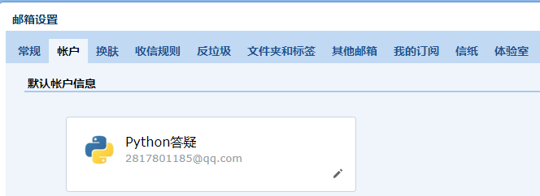
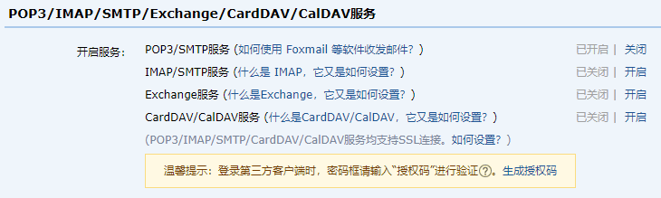
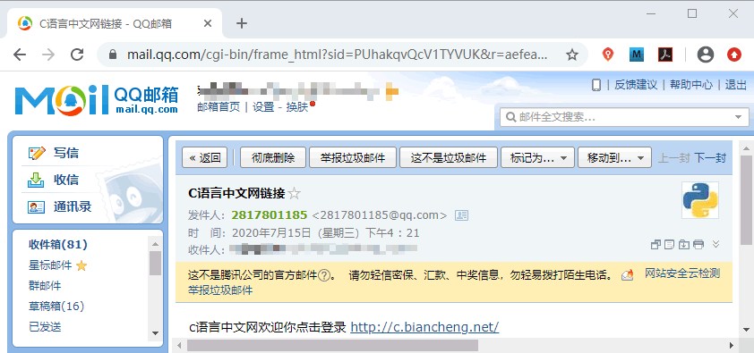

Django实现邮件的发送（含源码）
本节讲解 Web 项目中，经常使用的邮件的发送功能。它的应用场景大家一定不会陌生，比如用户注册成功时，会给用户输入的邮箱发送激活邮件进行验证，或者在找回密码的时候，需要使用邮箱进行验证，才可以实现密码修改。
在 Django 需要使用 Celery 来实现异步功能，它是一个简单、灵活且可靠的，能够处理大量消息的分布式系统。Celery 适用异步处理问题，比如发送邮件、文件上传以及图像处理等比较耗时的操作，异步操作可以有效的提升用户体验。
Django 支持电子邮件发送，是因为它对邮件发送的 STM 协议进行了封装。大家接都触过网络协议，我们知道 SMTP 协议就是用来支持邮件发送接收的协议，所以要实现邮件的发送功能，需要进行以下导包：
值得大家注意的是，你会发现我们所发的邮件竟然出现在了垃圾箱中，不必为此感到诧异。这是由于腾讯对 QQ 邮箱安全性的考虑而造成的结果，一般在实际的业务中，我们若需要实现发送邮件的功能，都会选择免费的企业邮箱作为服务端邮件发送者，这样就避免了邮件出现在垃圾箱中，比如可以选择 163、126 邮箱，实现过程和 QQ 邮箱基本一样，这里就不赘述了。
我们还可以调用 mail 的 send_mass_mail 方法实现一次性发送多条消息，demo 如下：
本节我们通过介绍了 Django 对邮件发送的支持，通过它的 django.core import mail 实现，大家一定自己亲自去试试，这样才能在实践中，不断提升自己的编码技巧。
1. 邮件发送异步问题分析
在实际项目中进行邮件的发送，要考虑很多问题，比如发送邮件的时，不应该等待时间太长，否则就会影响到用户体验，所以一般采用异步的方式发送邮件，所谓异步就是两个任务甚至多个任务同时进行，即邮件发送的操作时不会影响到其他任务的进行。在 Django 需要使用 Celery 来实现异步功能，它是一个简单、灵活且可靠的，能够处理大量消息的分布式系统。Celery 适用异步处理问题，比如发送邮件、文件上传以及图像处理等比较耗时的操作，异步操作可以有效的提升用户体验。
注意：我们在这里提出 Cerely ，只是提供一种解决问题的思路，有兴趣可以自己研究。
2. 实现QQ邮箱发送邮件
因为 QQ 邮箱覆盖用户比较广，所以本节我们以实现 QQ 邮箱发送电子邮件来讲解，但是无论是什么邮箱，它们的实现方法是类似的。Django 支持电子邮件发送，是因为它对邮件发送的 STM 协议进行了封装。大家接都触过网络协议，我们知道 SMTP 协议就是用来支持邮件发送接收的协议，所以要实现邮件的发送功能，需要进行以下导包：
from django.core import mail
然后调用 mail 的 send_mail 方法，该方法的定义如下：
def send_mail(subject, message, from_email, recipient_list,
fail_silently=False, auth_user=None, auth_password=None,
connection=None, html_message=None):
我们介绍主要参数的含义：
- subject：邮件主题；
- message：邮件正文内容；
- from_email：发送邮件者；
- recipient_list：邮件接受者列表；
- html_message：带有标签格式的HTML文本。
1) 开启QQ邮箱POP3/SMTP服务
到这里大家需要跟着步骤来，首先你要登录你的邮箱，然后在邮箱界面找到设置选项点击一下，会得到如下所示界面：

图1：Django实现邮件发送功能
然后点击依次点击账户 ——>找到 POP3/IMAP/SMTP.....服务，然后点击该选项卡中的第一项，开启 POP3/SMTP 服务，如下所示：图1：Django实现邮件发送功能

图2：Django实现邮件发送功能
图2：Django实现邮件发送功能
2) 获取POP3/SMTP第三方授权码
开启时，它需要你使用当时绑定的手机号，发送一条短信进行验证，按照它的提示发送成功后，点击已发送，就会生成一个授权码显示在你的浏览器界面上。记得保存好你的授权码，这个授权码在后面操作中还会用到，请务必妥善保管。3) 配置Django中的settings.py文件
当获得授权码后，我们就要在 Django 的 settings.py 中进行相应的配置，切记，你没有必要记下这些配置，它的写法是固定的，当你需要的时候直接 copy 即可，但是我们要明白这些配置项的意思，它们介绍如下所示：# 固定写法设置Email引擎 EMAIL_BACKEND ='django.core.mail.backends.smtp.EmailBackend' EMAIL_HOST = 'smtp.qq.com' # 腾讯QQ邮箱 SMTP 服务器地址 EMAIL_PORT = 25 # SMTP服务的端口号 EMAIL_HOST_USER = '2817801185@qq.com' #你的qq邮箱，邮件发送者的邮箱 EMAIL_HOST_PASSWORD = 'None' #你申请的授权码（略） EMAIL_USE_TLS = False #与SMTP服务器通信时,是否启用安全模式
3. 编写发送邮件视的图函数
最后一步就是要编写一个发送邮件的视图函数，它的格式几乎也是固定的，只需要更改相应的配置项即可，如下所示：
def send_email(request):
subject = 'C语言中文网链接' # 主题
from_email = settings.EMAIL_FROM # 发件人，在settings.py中已经配置
to_email = 'xxxxx@qq.com' # 邮件接收者列表
# 发送的消息
message = 'c语言中文网欢迎你点击登录 http://c.biancheng.net/' # 发送普通的消息使用的时候message
# meg_html = '<a href="http://www.baidu.com">点击跳转</a>' # 发送的是一个html消息 需要指定
send_mail(subject, message, from_email, [to_email])
return HttpResponse('OK,邮件已经发送成功!')
配置好 url 路径映射，并访问 127.0.0.1/index/send_email，就会得到显示邮件已经发送成功，查看我们的邮箱，可以看到发出的邮件。如下所示：

图3：Django实现邮件发送功能
图3：Django实现邮件发送功能
值得大家注意的是，你会发现我们所发的邮件竟然出现在了垃圾箱中，不必为此感到诧异。这是由于腾讯对 QQ 邮箱安全性的考虑而造成的结果，一般在实际的业务中，我们若需要实现发送邮件的功能，都会选择免费的企业邮箱作为服务端邮件发送者，这样就避免了邮件出现在垃圾箱中，比如可以选择 163、126 邮箱，实现过程和 QQ 邮箱基本一样，这里就不赘述了。
我们还可以调用 mail 的 send_mass_mail 方法实现一次性发送多条消息，demo 如下：
from django.core.mail import send_mass_mail
message1 = ('Subject here', 'Here is the message', 'from@example.com', ['first@example.com', 'other@example.com'])
message2 = ('Another Subject', 'Here is another message', 'from@example.com', ['second@test.com'])
#接收元组作为参数
send_mass_mail((message1, message2), fail_silently=False) #fail_silentl运行异常的时候是否报错，默认为True不报错
那么 send_mail 与 send_mass_mail 这两者的区别在哪里呢？send_mail 每次发邮件都会建立一个连接，发多封邮件时建立多个连接。而 send_mass_mail 是建立单个连接发送多封邮件，所以一次性发送多封邮件时 send_mass_mail 要优于 send_mail。本节我们通过介绍了 Django 对邮件发送的支持，通过它的 django.core import mail 实现，大家一定自己亲自去试试，这样才能在实践中，不断提升自己的编码技巧。
关注公众号「站长严长生」，在手机上阅读所有教程，随时随地都能学习。内含一款搜索神器，免费下载全网书籍和视频。

微信扫码关注公众号